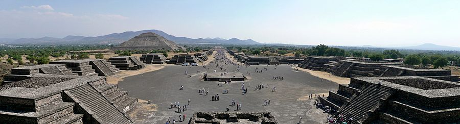

América
América é o continente localizado no hemisfério ocidental e que se estende, no sentido norte-sul, desde o oceano Ártico até o cabo Horn, ao longo de cerca de 15 mil quilômetros. Também é conhecida pela expressão "Novo Mundo", neste caso em oposição à Eurafrásia, considerada o "Velho Mundo", e à Oceania, chamada de "Novíssimo Mundo". A maioria dos estudiosos aponta o nome do navegador italiano Américo Vespúcio como origem etimológica do topônimo "América", cujo gentílico é "americano". A América compõe-se de duas massas de dimensões continentais (as Américas do Norte e do Sul) ligadas por um istmo (o istmo do Panamá) que é cortado por um canal (o canal do Panamá). Além dessas divisões, há os conceitos das chamadas América Central e Mesoamérica.
Os cinco maiores países da América, Canadá, Estados Unidos, México, Brasil e Argentina, são também as maiores economias, que estão entre as vinte maiores do mundo. Com uma área de 42 189 120 km² e uma população de mais de 902 milhões de habitantes, corresponde a 8,3% da superfície total do planeta, ou 28,4% das terras emersas, e a 14% da população humana. Localizada entre o oceano Pacífico e o Atlântico, a América inclui o mar do Caribe e a Groenlândia, mas não a Islândia, por razões históricas e culturais.
A América é geralmente dividida em (América do Norte, América Central e América do Sul). Contudo os países anglófonos, por influência dos Estados Unidos, costumam usar o termo Américas para definir o continente, subdividindo-o não em três partes mas em dois continentes: América do Norte e América do Sul. No entanto, a visão predominante pelas várias línguas do mundo é a definição de América como sendo um único continente.
PRINCIPAIS PAÍSES
- Estados Unidos
- Brasil
- Canadá
- México
- Argentina
Estados Unidos

Com 9,37 milhões de km² de área e uma população de mais de 300 milhões de habitantes, o país é o quarto maior em área total e o terceiro em população. Os Estados Unidos são uma das nações mais multiculturais e etnicamente diversas do mundo. A maior parte do país situa-se na região central da América do Norte, formada por 48 estados (continentais) e o Distrito de Colúmbia. O Alasca está no noroeste do continente. O Havaí é um arquipélago no Pacífico Central. O país também possui vários outros territórios no Caribe e no Oceano Pacífico.
Os Estados Unidos são um país desenvolvido e formam a maior economia do mundo, com um produto interno bruto que em 2012 foi de 15,6 trilhões de dólares, equivalente a 19% do PIB mundial por paridade do poder de compra de 2011. Sua economia é alimentada pela abundância de recursos naturais, por uma infraestrutura bem desenvolvida e pela alta produtividade, o país é um dos maiores fabricantes do mundo. Os Estados Unidos respondem por 39% dos gastos militares do planeta e são um forte líder econômico, político e cultural.

Os Estados Unidos possuem uma grande e lucrativa indústria turística que serve milhões de turistas domésticos e internacionais. O turismo nos Estados Unidos é promovido primariamente a nível local e estadual, uma vez que o governo federal propriamente dito não promove turismo, embora regule os requerimentos de entrada para turistas internacionais. Os Estados Unidos são o terceiro país mais visitado por turistas internacionais do mundo, atrás apenas da Espanha e da França. Entre as cidades mais turísticas estão New York, Los Angeles, Las Vegas, Miami, Chicago, San Diego, entre outras.
Brasil
Brasil é o maior país da América do Sul e da região da América Latina, sendo o quinto maior do mundo em área territorial (equivalente a 47,3% do território sul-americano) e sexto em população (com mais de 210 milhões de habitantes). É o único país na América onde se fala majoritariamente a língua portuguesa e o maior país lusófono do planeta, além de ser uma das nações mais multiculturais e etnicamente diversas, em decorrência da forte imigração oriunda de variados locais do mundo.
O Brasil é a maior economia da América Latina, a segunda da América (atrás apenas dos Estados Unidos) e a oitava maior do mundo, de acordo com o FMI e o Banco Mundial. O país tem uma economia mista capitalista com vastos recursos naturais. Estima-se que a economia brasileira irá se tornar uma das cinco maiores do mundo nas próximas décadas. O PIB per capita atual é de 9 821,41 dólares (2017). Brasil tem uma força de trabalho de mais de 120 milhões de pessoas (6ª maior do mundo) e desemprego de 11,7% (38º no mundo).

O turismo é um setor crescente e fundamental para a economia de várias regiões do país. O país recebeu 6 milhões de turistas estrangeiros em 2013, sendo classificado, em termos de chegadas de turistas internacionais, como o principal destino da América do Sul e o segundo na América Latina, depois do México. As receitas de turistas internacionais atingiu 5,9 bilhões de dólares em 2010, uma recuperação da crise econômica de 2008-2009 Os registros históricos de 5,4 milhões de visitantes internacionais e 6,775 bilhões de dólares em receitas foram atingidos em 2011.
México
Com um território que abrange quase 2 milhões de quilômetros quadrados, o México é o quinto maior país das Américas por área total e o 14.º maior país independente do mundo. Com uma população estimada para 2017 de 123,7 milhões de habitantes, é o 11.º país mais populoso do mundo e o mais populoso país da hispanofonia. O México é uma federação composta por 31 estados e a Cidade do México (capital). O México figura também como o segundo país mais populoso e segundo em PIB da América Latina, em ambos os casos superado apenas pelo Brasil.
A economia do México é, atualmente, a 14.ª maior do mundo se consideramos seu Produto Interno Bruto (PIB) nominal (dados de 2011), bem como a 11.ª se for levado em conta seu PIB medido em Poder de Compra (além de ser, efetivamente, a 2.ª mais desenvolvida da América Latina, superada somente pelo Brasil). O México tem uma economia mista de livre mercado e está firmemente estabelecido como um país de renda média-alta.
O turismo no México é uma atividade econômica importante para o país, classificado no décimo lugar ao nível mundial em termos de chegadas de turistas internacionais, com 23,4 milhões de visitantes em 2011, e rankeia no primeiro lugar dentro da América Latina. Com 32 sítios (26 culturais, 5 naturais e 1 misto), o México tem o maior número de locais designados pela UNESCO como Patrimônio da Humanidade de qualquer país das Américas, e está em sexto lugar no mundo. As principais atrações turísticas do México são as ruínas arqueológicas das culturas Mesoamericanas, as cidades coloniais e os complexos turísticos de praia.
